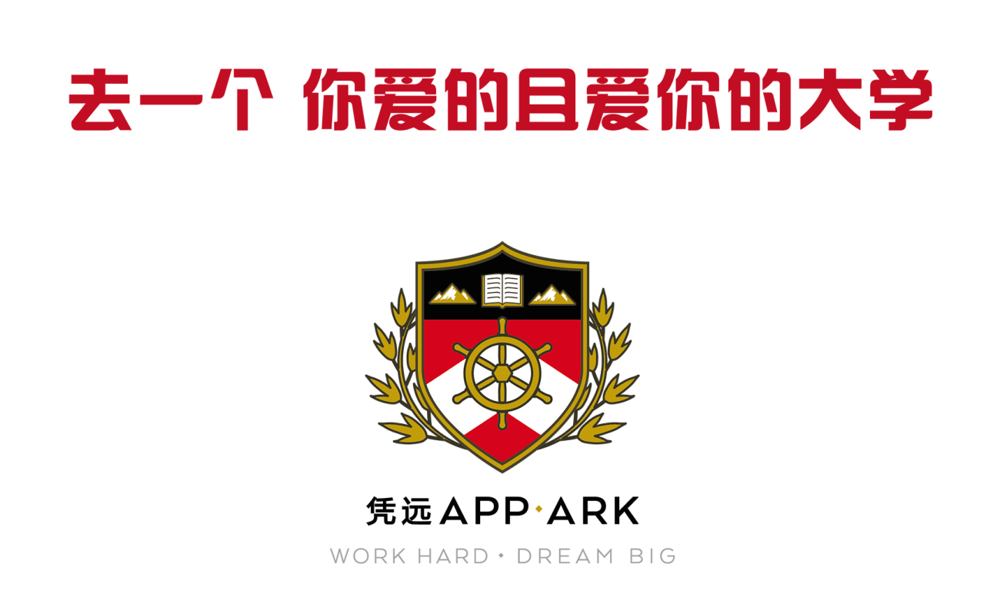

我们的团队
Our Team

App-Ark 为你量身辅导美国本科申请，冲击梦想学校。但我们高得惊人多梦想学校申请成功率并不是我们的全部。我们希望在整个申请季过后，你们可以学会跟不同肤色不同文化的人谈笑风生，可以遇到一起逛街拍照订外卖聊黑格尔的朋友，并且在我们最后的文化生存课里提前学习美国社交技巧，成为真正的人生赢家。
每个学生家庭都会配备三名业内最顶级的顾问
负责家长沟通，申请策略制定，时间规划和整体形象设定等
负责文书润色和面试训练等
负责申请材料管理，流程监督等
我们有业内最严格的团队审阅机制。 每周我们定时召开多轮申请材料，文书审阅会，顾问反复审阅彼此的材料， 提出修改意见。我们不断模拟真实大学里的招生委员会，只希望持续优化你的申请材料，祝你进入梦想学校。
成立六年来，凭远不断摸索着适合高端留学的管理系统。我们把所有的环节系统性拆分，杜绝任何材料遗漏，截止日期等 失误。我们开发业内最科学的管理系统，只因为我们知道冲击美国顶级大学是一项极度复杂的工程，每一环节都同样重要。
从凭远学生的角度真实了解在凭远发生的一切。在电视节目上听凭远的顾问分享故事和经验
我们学生自己拍的告白视频
我们的学生
我们的学生
我们的顾问也同样是ICS海外路路通节目的长邀嘉宾
我们的顾问也同样是ICS海外路路通节目的长邀嘉宾
成立于 2009 年的凭远 App-Ark, 致力为每一位学生打造独一无二的申请材料，冲击能力范围中最好的且最适合自己的大学。申请并不只是与他人的竞争，这是一次搜寻自己内心深处激情的机会，突破自我认识极限的机会。“你是谁，从哪里来，要到哪儿去？” 凭远的老师们愿意跟你一同搜寻这些问题的答案，也让你同我们已经毕业的校友们一样，在自己的梦想大学中追梦。
发明
再把发明投入生产
创新
找到喜欢科学的原因
音乐
学会了小提琴制作
文化，为法国
学生制作文化手册
公益
你可以不那么功利
ED
这是一场合理的博弈